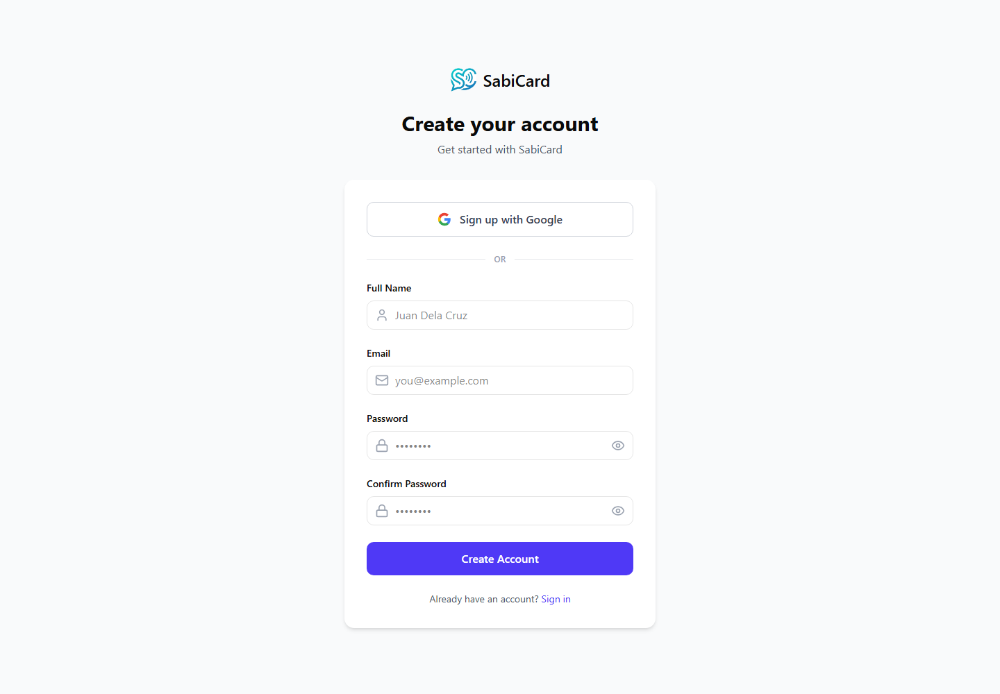
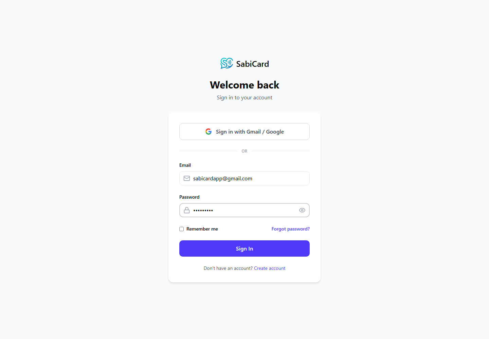
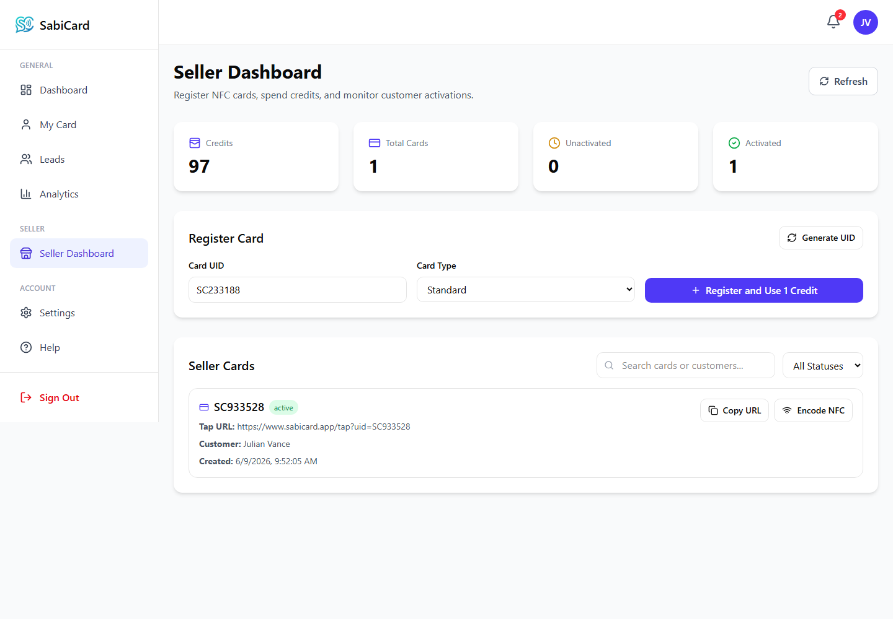
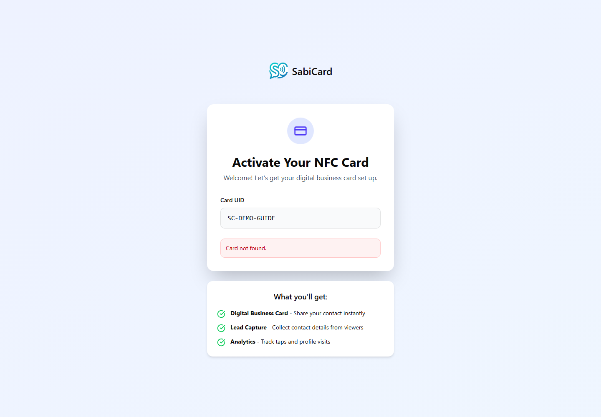

SabiCard Seller Guide
MVP onboarding, seller activation, card registration, NFC encoding, credits, and seller policies.
Generated from actual SabiCard application screenshots.
1. Seller Account Registration
A seller starts by creating a normal SabiCard account. For the MVP, seller access is not automatic. The platform admin reviews and activates the seller account.
- Open the registration page.
- Enter full name, email, password, and confirmation password.
- After registration, sign in with the new account.

2. Sign In
The seller signs in using the same account that will later be approved by the admin.

3. Seller Access
In this MVP, seller access is approved by the platform before the Seller Dashboard becomes available. Once approved, the seller signs in with their normal SabiCard account and opens the Seller Dashboard.
- Create or sign in to the seller account.
- Wait for platform approval.
- Open
/seller to manage credits and cards.
4. Seller Dashboard
After activation, the seller can open the Seller Dashboard. This dashboard shows credits, total cards, unactivated cards, and activated cards.

5. Registering a Card
To issue a card, the seller enters or generates a Card UID and clicks Register and Use 1 Credit.
One successful card registration consumes exactly 1 seller credit. Failed NFC writing does not consume another credit because the credit is deducted when the card record is registered in the platform.

6. Encoding the NFC Card
After registration, the seller can encode the card by writing the card tap URL to the physical NFC tag.
- Find the card in Seller Cards.
- Click Encode NFC.
- Use Chrome on Android over HTTPS with NFC enabled.
- Hold the card still near the phone until writing finishes.
If Web NFC is not supported on the device, copy the Tap URL and use another NFC writer app or compatible Android browser/device.

7. Customer Activation
The seller gives the encoded card to the customer. When the customer taps the card, SabiCard opens the activation page. The customer creates or signs in to their own account, then confirms activation.
The system automatically links the activated card and customer back to the seller who registered the card.

Credit Rules
Credit Usage
- 1 registered card = 1 credit consumed.
- Credits are deducted only after successful card registration.
- Duplicate card UIDs should not be registered again.
- Credits are tracked in a ledger for audit history.
Seller Access
- Seller accounts are admin-approved during the MVP.
- Suspended sellers cannot register new cards.
- Seller dashboard data is limited to cards registered by that seller.
- Users activate their own accounts; sellers do not create customer accounts.
Replacement and Support Policy
- Each new physical card registration uses a credit.
- Lost, defective, or replacement cards should be handled according to admin policy.
- Admin may adjust credits manually for approved support cases.
- Card ownership should not be transferred after activation without admin review.